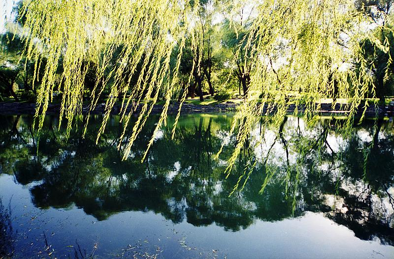

siliconworm2010-10-21 20:42

seci2010-07-19 10:034.44 分
性价比 5.00色彩还原 4.50分辨率 4.50锐利度 4.50颗粒度 4.00反差 5.00色饱和度 4.00宽容度 4.00倒易率允许 4.50
siliconworm2010-05-23 11:51
Pantrol2010-03-14 21:004.94 分
性价比 5.00色彩还原 4.50分辨率 5.00锐利度 5.00颗粒度 5.00反差 5.00色饱和度 5.00宽容度 5.00倒易率允许 5.00
siliconworm2009-11-07 00:445 分
性价比 5.00色彩还原 5.00分辨率 5.00锐利度 5.00颗粒度 5.00反差 5.00色饱和度 5.00宽容度 5.00倒易率允许 5.00
上帝武装2009-08-09 14:514.61 分
性价比 4.50色彩还原 4.50分辨率 5.00锐利度 5.00颗粒度 5.00反差 4.50色饱和度 4.50宽容度 4.50倒易率允许 4.00
肉牛2009-05-23 23:295 分
性价比 5.00色彩还原 5.00分辨率 5.00锐利度 5.00颗粒度 5.00反差 5.00色饱和度 5.00宽容度 5.00倒易率允许 5.00
00oooo002008-12-07 21:554.06 分
性价比 4.50色彩还原 4.00分辨率 4.00锐利度 4.00颗粒度 4.00反差 4.00色饱和度 4.00宽容度 4.00倒易率允许 4.00
reffni2008-12-07 21:354.39 分
性价比 4.00色彩还原 4.50分辨率 4.50锐利度 4.50颗粒度 4.50反差 4.00色饱和度 4.50宽容度 4.50倒易率允许 4.50
醒目2008-10-22 21:204.61 分
性价比 5.00色彩还原 5.00分辨率 4.50锐利度 5.00颗粒度 4.00反差 4.50色饱和度 4.50宽容度 5.00倒易率允许 4.00